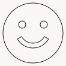

Slapstick faces — two designs
A slapstick is two slats hinged at one end. Swing it and the free ends clap together with a crack far louder than the effort suggests — the sound effect that gave stage comedy its name.
These two files are the decorative face, not the mechanism. Each is a 100mm disc with a pair of eyes and a mouth cut through it, meant to dress a slapstick you build separately. Nothing here hinges, and nothing here claps.
Get the files
- Everything as a ZIP — both faces.
- Repository — if you want to change an expression or the disc size.
- Or click either picture below to download that one cut file.
Released under CC0 1.0 — do what you like with them, no attribution needed. Built for LaserMadeMusic.
The two faces
Click either to download the cut file. The pictures are display renderings — the cut files draw a hairline on no background at all, which a browser shows almost invisibly, so these are thickened and painted onto a light ground. Both are the same size, so these two you can compare directly.
 |
|
| Smiling · 100 × 100mm | Sad · 100 × 100mm |
{kind=link}
{kind=link}
What the files contain
Measured out of the files themselves:
| Face | Disc | Eyes | Mouth |
|---|---|---|---|
SlapstickSmilyFace.svg | 100 × 100mm | two, 12mm, 36mm apart | crescent, 52 × 19mm, turning up |
SlapstickSadFace.svg | 100 × 100mm | two, 12mm, 36mm apart | crescent, 52 × 19mm, turning down |
The two are identical except for the mouth: same disc, same eyes in the same places. Both eyes sit 36mm from the top of the disc, and the pair straddles the vertical centreline.
Each file is its own 100 × 100mm sheet — the disc fills it exactly, with no margin, so your laser's origin is the disc's own corner. Output is millimetre-true — 1 user unit = 1 mm with a physical width/height — so it prints and cuts at real size. Every line is a cut; there is no engrave layer and nothing to map by colour.
The eyes and mouth are cut through, not engraved. They drop out as waste. If you want them as marks on a solid face rather than holes, change them to a score or engrave operation in your laser software before running the job.
Before you cut
There is no mechanism here. No hinge, no fixing holes, no slats — a slapstick's two slats, its hinge and its handle are all yours to build. These faces decorate the result.
Nothing about mounting is decided for you. There are no screw holes or alignment marks, so how the face attaches — glued, pinned, inset — is a choice you make against whatever you build, and you may want to add holes before cutting.
Material and thickness are yours, and nothing here has been validated against cut stock. A face carrying three cutouts has less holding it together than a plain disc. The tightest spot is where the mouth's ends approach the rim — about 14mm of material, against 21mm beside each eye and 24mm between the two eyes.
Files
SlapstickSmilyFace.svg · SlapstickSadFace.svg | the two cut-ready faces |
previews/ | display renderings — not cut files |
index.md · index.html | this page; the markdown is the source |